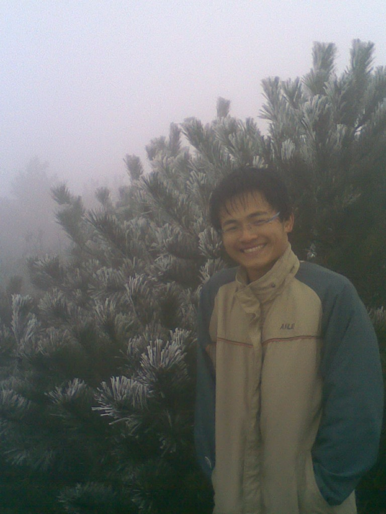
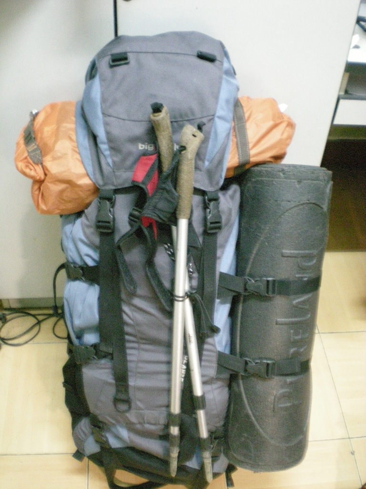
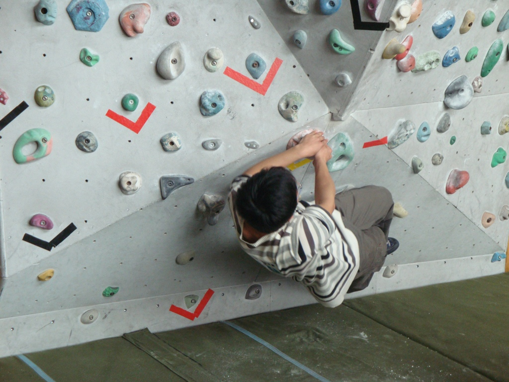
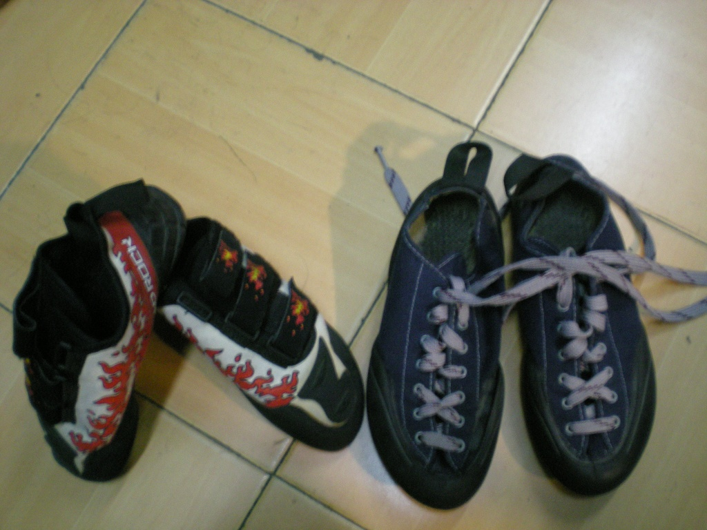
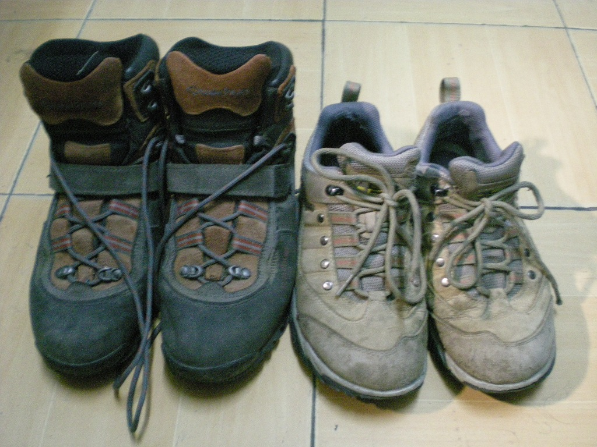
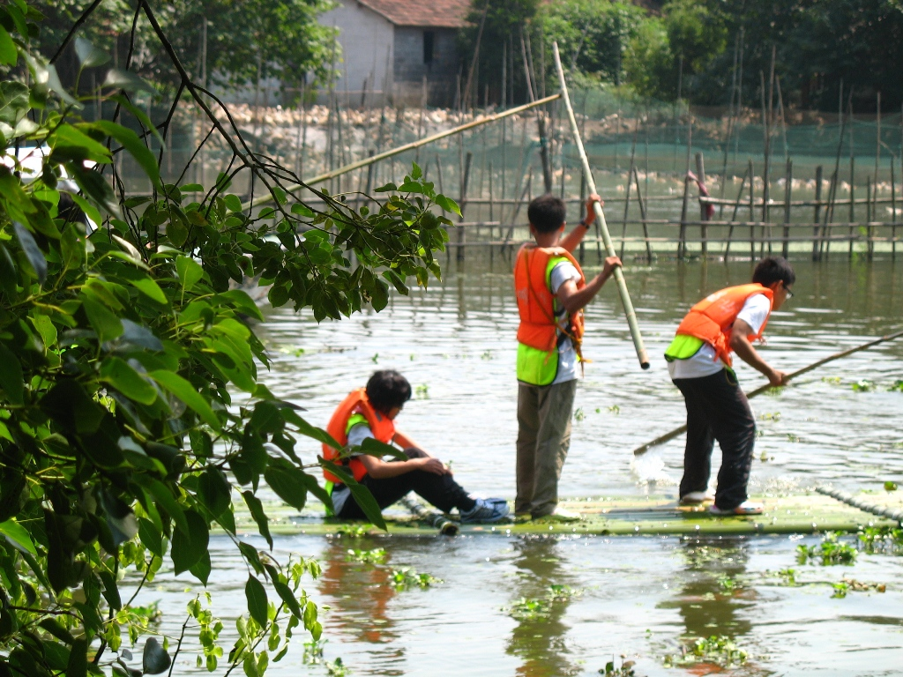
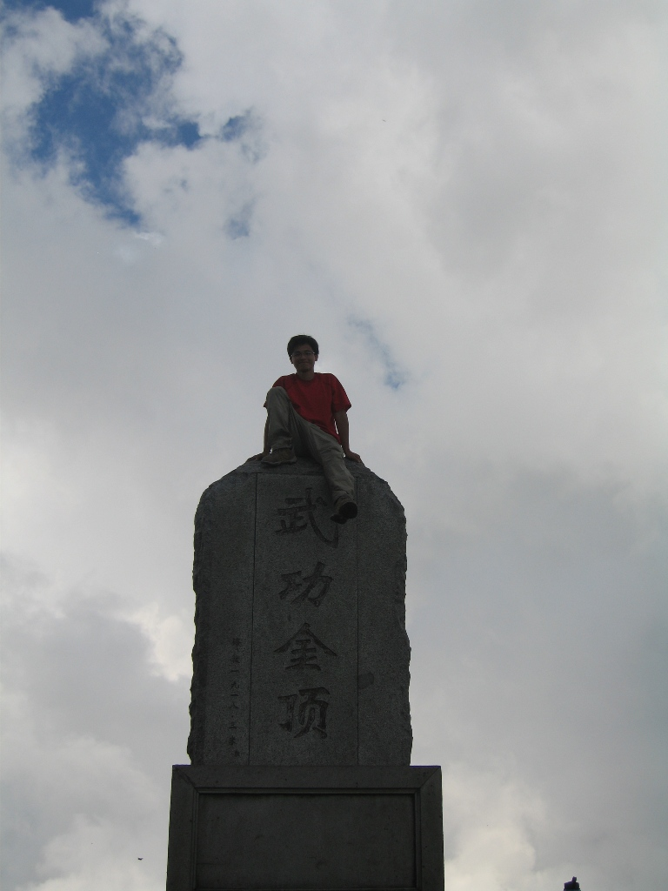
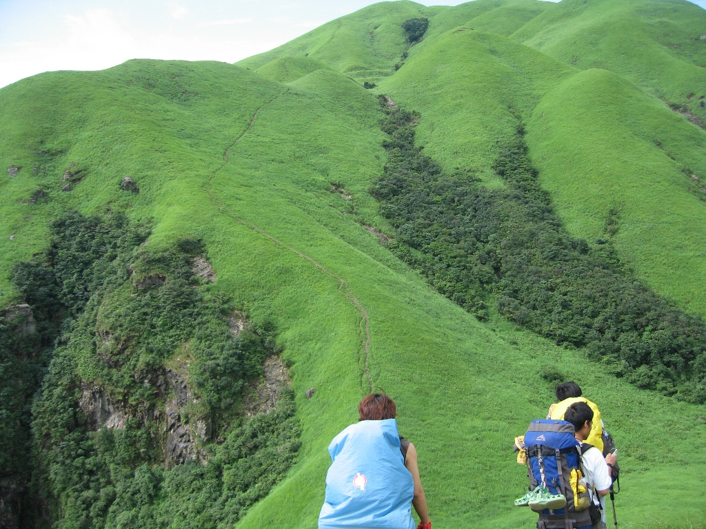

发信人: yanhao (一个人~), 信区: outdoor
标 题: 上任自爆【多pic慎入~】
发信站: 饮水思源 (2010年12月03日21:30:42 星期五)
很多的人都认识我吧，更多的人都还不知道我吧，值此COD程序调试完成之际，大快人心！
上任自爆，攒攒人品，大家多多关照~~~
 screen.width - 200){this.width = screen.width - 200}">
第一次参加野协活动，被带进了户外这个大家庭~龙王山的雾凇很赞，人很冷~~~
 screen.width - 200){this.width = screen.width - 200}">
第一次帮协会团购，也购进了自己的第一件装备，big pack discovery 70+10，迩来两年
，细细想来，最温暖的，还是自己的包啊~~~
 screen.width - 200){this.width = screen.width - 200}">
大一的时候接触攀岩，从拧不动毛巾，到问顶大屋檐，每周末的华师大，似乎成了自己生
活的一个归属，虽然时不时会被什么“菊花展”给囧到。。。
 screen.width - 200){this.width = screen.width - 200}">
当时还是右边的鞋子，迪卡侬的入门初级岩鞋。而左边那双后买的mad rock的岩鞋，在一
次次肆虐我的双脚后，至今还不知道哪里是归宿…
第一次领队在浙东，也见证了我第一双登山鞋的悲剧，在作为水桶的两天里，也注定了它
不平凡的命运，静静地躺在我的鞋架上…
screen.width - 200){this.width = screen.width - 200}">
被财哥拍糊的一张照片，但是但是，这真是我么……
 screen.width - 200){this.width = screen.width - 200}">
又是迪卡侬…左边那双笨重的靴子，在这次三尖，又一次打败了我…倒是右边的低帮徒步
鞋，虽说奥索卡的鞋子貌似并不出众，v底+ g-tx花去400大洋，在淮海路巴黎春天淘到的
时候，还是蛮兴奋的~~~
还有更多的第一次发生在野协，发生在outdoor，发生在与户外的点点滴滴中~
screen.width - 200){this.width = screen.width - 200}">
第一次办定向~找不着人，就放我可爱的小车一张~~~
screen.width - 200){this.width = screen.width - 200}">
第一次二人出游，新安江~~~（某人不让我放合照，怨念…）
 screen.width - 200){this.width = screen.width - 200}">
第一次参加户外比赛，德清下渚湖~~~哈哈，顺便爆爆阳姐姐和cm~~~
 screen.width - 200){this.width = screen.width - 200}">
还有还有，第一次长线-武功山~~~
 screen.width - 200){this.width = screen.width - 200}">
嗯~兼爆下财哥和小豪豪（看你这包打的，三尖的时候还嘲笑我~~~）
…
而今在outdoor，会有更多的收获、更多的感动，更多的你、我、他在播种着更多的希望~
screen.width - 200){this.width = screen.width - 200}">
这张好像常出现。。。
嗯，换一张。。。
screen.width - 200){this.width = screen.width - 200}">
--
※ 来源:·饮水思源 bbs.sjtu.edu.cn·[FROM: 59.78.57.99]
|